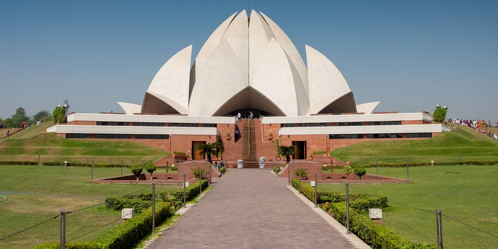

Best Tourist places
Lotus Temple
A Baha’i House of Worship, Lotus Temple is not to be missed when you are in Delhi. This temple is known for its unique structure, which is in the shape of a white lotus flower. It was built in 1986 and has been a place of great popularity since then. It has seen more than 10 million visitors by 2014. Made up of white marble, its design of a lotus flower with captivating petals, was conceptualised by Canadian architect Fariborz Sahba. This structure represents the philosophy behind the temple, which is of a harmonious living, respecting all the religions. People from all religious backgrounds can visit and worship here. Nine pools around the lotus petals, which are lit at night, are also worth capturing here.
Taj Mahal

The Taj Mahal is a white marble mausoleum built by the Mughal emperor Shah Jahan in memory of his wife Mumtaz Mahal in Agra, India. it also houses the tomb of Shah Jahan himself. The tomb is the centrepiece of a 17-hectare (42-acre) complex, which includes a mosque and a guest house, and is set in formal gardens bounded on three sides by a crenellated wall. Construction of the mausoleum was completed in 1648, but work continued on other phases of the project for another five years. The first ceremony held at the mausoleum was an observance by Shah Jahan, on 6 February 1643, of the 12th anniversary of the death of Mumtaz Mahal. The Taj Mahal complex is believed to have been completed in its entirety in 1653 at a cost estimated at the time to be around ₹5 million, which in 2023 would be approximately ₹35 billion (US$77.8 million).